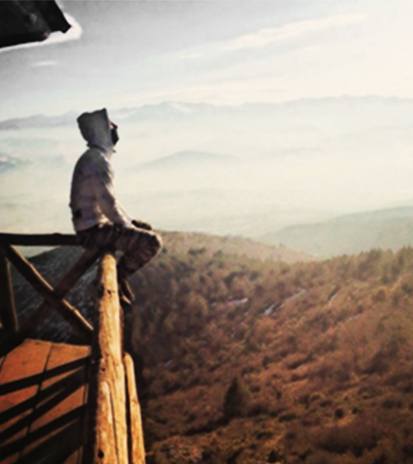
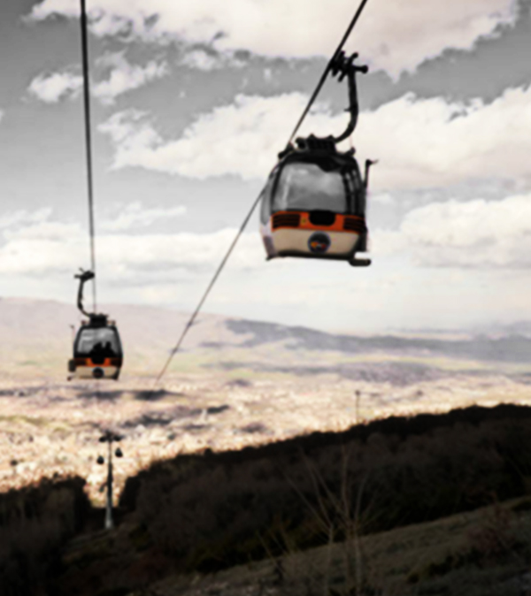
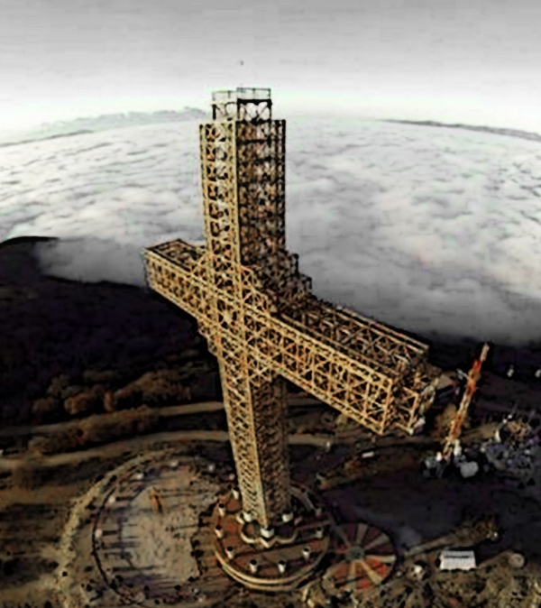

City Park
This park has been constructed during the time of Afuz Mehmed Pasha who was governor of Skopje, in the surroundings of the Craftmanship School, soon after the school's construction. One part of this original lot of the park exists today and is located in the vicinity of the Kermes Restaurant. It covers a surface of 486,000 m2, along the street Leninova in the east, Blvd. “Oktomvriska Revolucija” in the west, the Vardar River in the north and Blvd. “Ilinden” in the south. The City park area is characterized by very rare and high quality plants. The vegetation consists primarily of varieties originating from the Southern European Mediterranean region, but other varieties from all over the world can also be found.Skopje Zoo
The Skopje Zoo is a 12-hectare zoo located in the city park. It is home to about 300 animals representing around 85 species. In 2008 the City allocated Denar 42 million in funds to improve the zoo, and the zoo started working with the European Association of Zoos and Aquaria (EAZA) to improve conditions and bring the zoo up to modern standards. By 2010, 18 new enclosures had been built and 85% of the older exhibits at the zoo had been renovated.
Mount Vodno
  
{kind=link}
{kind=link}
{kind=link}
For those who seek a little more adventure and outdoor activities, hiking or biking, limits are nonexistent
in the forest of the Vodno Mountain. The Millennium Cross,
built as a memorial to 2000 years of Christianity, is situated right at the „Krstovar“ peek, the highest point of the
mountain. It is a 66-meter high and is actually the fourth tallest in the world. The construction began in 2002 and was funded by the Macedonian Orthodox Church,
the Macedonian government and donations from Macedonians from all over the world. On 8 September 2008, the independence
day of the Republic of Macedonia, an elevator was installed inside the cross. In 2009, a restaurant and a souvenir shop
were opened next to the cross. In 2011 the Millennium Cross ropeway was opened. The ropeway is three and a half km long.
At night the cross shines down over the city, but during the day you can see it up close. It is located at the top of Vodno
Mountain, overlooking Skopje’s city center. You can reach the cross by either a very strenuous hike, or by taking a bus
to the middle of the mountain and then continue by cable car.
Canyon Matka
Covering roughly 5,000 hectares, Matka is one of the most popular outdoor destinations in Macedonia and is home to several medieval monasteries. The Matka Lake within the Matka Canyon is the oldest artificial lake in the country.Due in large part to its proximity to Skopje, Matka Canyon is a popular destination for citizens and tourists. . Kayaking on the Treska River is a popular activity, as are fishing, hunting, hiking, climbing and swimming.Vrelo Cave
Located on the right bank of the Treska River, the cave was listed as one of the top 77 natural sites in the world in the New7Wonders of Nature project. Vrelo Cave has many stalactites including a large one in the middle of the cave is known as the "Pine Cone" due to its shape. There are two lakes at the end of the cave, with one larger than the other. The smaller lake is 8 metres (26.2 feet) at its longest length and 15 metres (49.2 feet) in depth at its deepest point. The larger lake is 35 metres (114.8 feet) at its longest length, and 18 metres (59 feet) at its deepest point.Though the exact depth of the cave is unknown, some speculate that it could be the deepest underwater cave in the world.